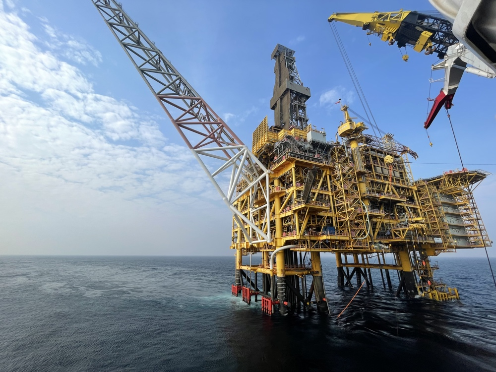

AI-driven analysis and autonomous engineering precision for rigid S-lay, J-lay, complex subsea structures, and full EPCI execution scopes.
Real-world offshore infrastructure deployment managed under strict engineering governance and advanced simulation models.

Launch our dedicated interactive web application to compute bottom tension, top tension, suspended arc length, and sag-bend radius in real time.
Comprehensive lifecycle engineering and automation frameworks managing full-scale SURF architecture. From deepwater riser configurations to high-integrity pipeline routing, our AI-assisted design models guarantee structural safety and operational efficiency.
Advanced installation analysis for rigid pipeline deployment. Whether executing shallow-to-intermediate water S-lay operations with stinger configuration or deepwater ultra-heavy wall J-lay tower deployment, our software predicts structural limits and dynamic vessel interactions with absolute precision.
Engineered precision for subsea manifolds, PLETs, ILTS, templates, and modular protection structures. Using automated hydrodynamic simulations and splash-zone crossing models, we mitigate wave-slam impact and ensure safe touchdown placement on the seabed.
Advanced structural analysis, thermal modeling, and industrial processing protocols spanning marine and agro-energy sectors.
Custom automation suites designed to drastically reduce manual computation times and eliminate human error variables.
Strict project management frameworks ensuring multi-million dollar asset scopes are delivered on schedule and within parameters.
Connect with our engineering directorate for enterprise offshore consultancy, infrastructure automation contracts, or joint venture collaborations.